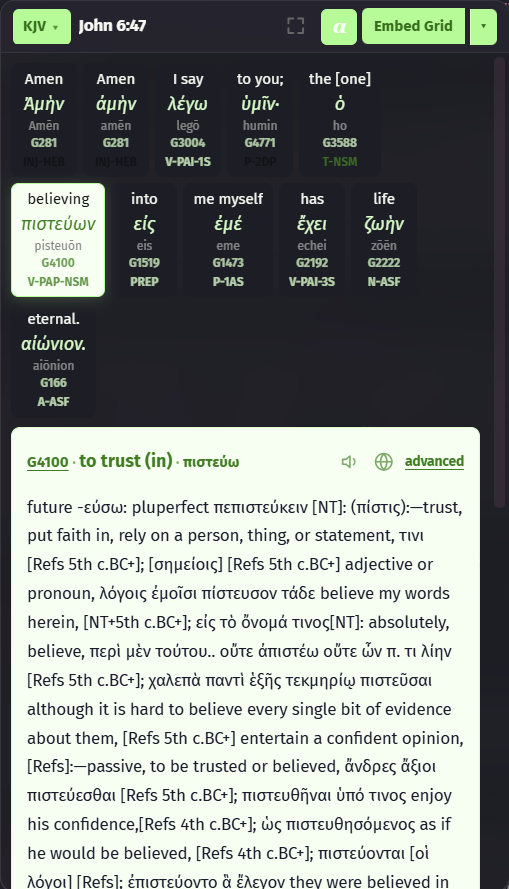

ScriptureScribe
Scripture,
illuminated.
A Bible study workbench for Obsidian. Hover verses, read the Bible beside your notes, dig into Hebrew & Greek, and present full-screen verse cards.


G3056 · nounλόγοςword
H7225 · nounרֵאשִׁיתbeginning
G5485 · 192 versesχάριςgrace


ScriptureScribe
Bible study in Obsidian
Your notes light up the Bible. Hover any verse, open the Greek and Hebrew, put the Word on screen.
